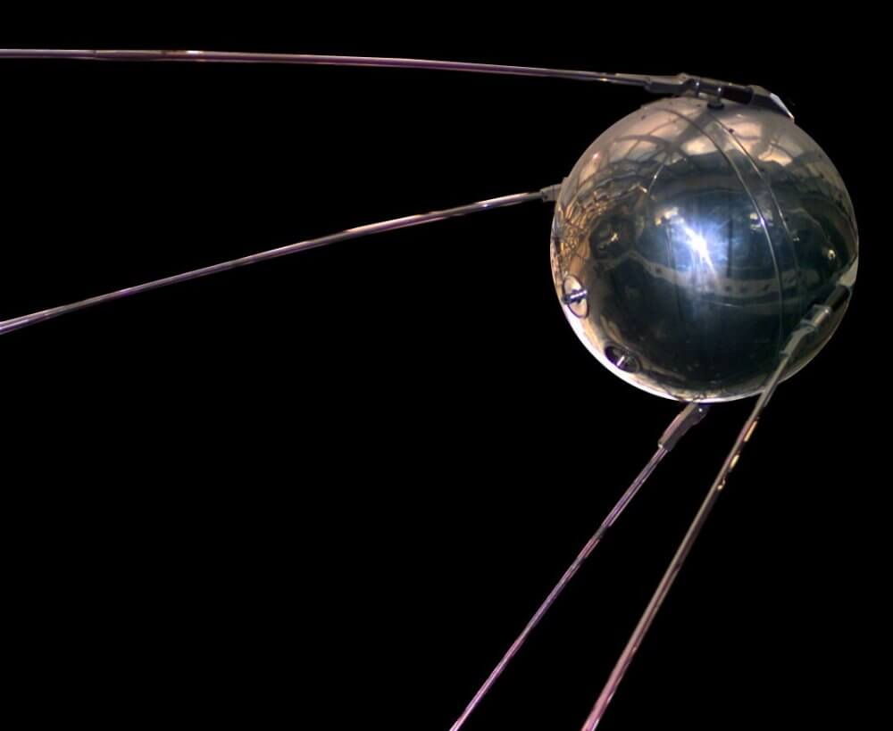
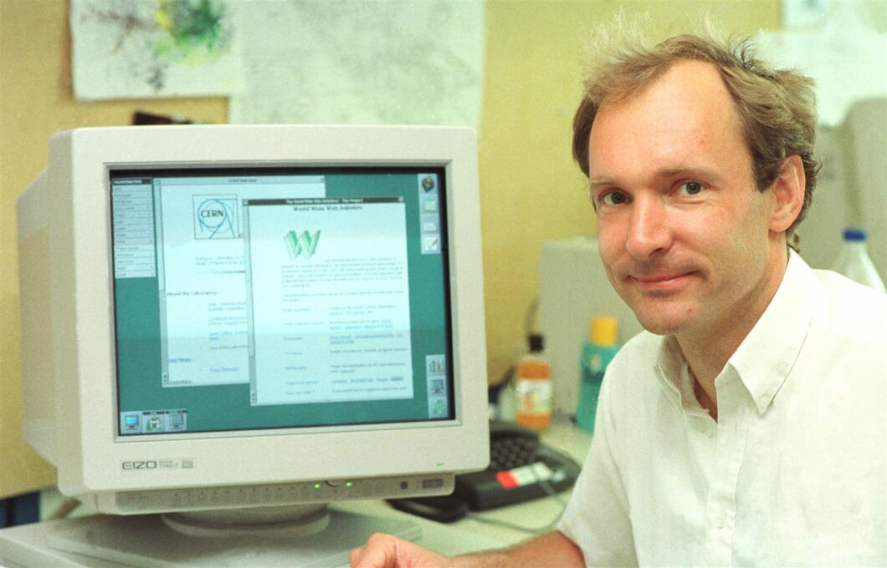

Internet é a rede que conecta globalmente todos os servidores do mundo. A Web é uma ferramenta da
Internet.
Ou seja, A internet é interconexão de redes de computadores, possibilitando a oferta de diversos serviços
entre eles e-mail, mirc, dns, ftp, ssh, rdp, telnet web e outros.
A internet surgiu durante a guerra fria. Em 1957, a União Soviética lançou o primeiro setélite artificial, que após isso iniciou a corrida espacial devido ao temor que os americanos sentiam pela possibilidade de seus inimigos serem espionados pela união soviética e ela os vencesse. Por conta disso, os americanos começaram a pensar mais seriamente sobre ciência e tecnologia.
<<<<<<< HEAD
Não demorou muito para que, em 1958, a US Administration passasse a financiar várias agências, sendo uma delas a ARPA.
Sem a ARPA, a Internet não existiria. Foi por causa dessa instituição que foi criada a primeira versão da Internet, a ARPANET. Posteriomente, foi construido uma rede de computadores
cujo objetivo era compartilhar recursos, fossem dados, descobertas ou aplicações.
Desde os primórdios da ARPANET, ainda faltava uma linguagem comum para que computadores fora de sua própria rede
pudessem se comunicar com computadores em sua própria rede, mesmo sendo uma rede de troca de pacotes segura e
confiável. Por conta disso, o protocolo TCP/IP foi criado para possibilitar a comunicação entre as redes.
Durante a decada de 1980, esse protocolo foi testado e adotado por muitas redes. Porém seu uso era limitado por pesquisadores, cientistas e programadores para trocar mensagens e informações. Era desconhecida para o público em geral, até o surgimento da web.
<<<<<<< HEAD =======Tim Berners-Lee, um cientista britânico, inventou a World Wide Web (WWW) em 1989, enquanto trabalhava no CERN. A ideia básica da WWW era fundir as tecnologias em evolução de computadores, redes de dados e hipertexto em um sistema de informação global poderoso e fácil de usar.
<<<<<<< HEAD
Tim Berners-Lee escreveu a primeira proposta para a World Wide Web em março de 1989 e a segunda em maio de
1990.
No final de 1990, Tim Berners-Lee já tinha o primeiro servidor e navegador web em funcionamento
no CERN, demonstrando suas ideias.
Além dele criar a web que conhecemos hoje, ele desenvolveu a URL que nos permite digitar o
endereço de uma página para acessá-la.
| Ano | Evento |
|---|---|
| 2017 | W3c e IDPF se unem |
| 2019 | Tradução autorizada do DWBP |
| 2020 | A web ganha espaço sideral |
| 2021 | Fim do Yahoo respostas |
| 2022 | ChatGPT |
| 2025 | DeepSeek |
| Referência: https://ceweb.br/linhadotempo/ | |